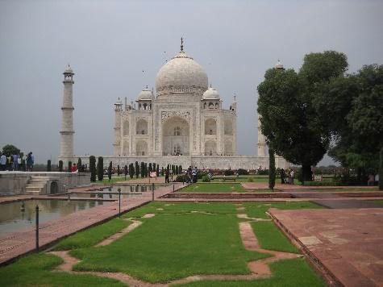

Touring The Taj - My Experience at the Taj Mahal
It was yet another sweltering hot and humid summer evening in Ghaziabad, a town a few kilometers away from New Delhi, the capital of India. My week could be simply summarized as heat, boredom, and even more heat. The temperature would seldom dip below 110°F, and AC was out of the question. I was sitting in the bedroom of my grandparents’ apartment, trying to enjoy one of the few English channels on TV while swatting at impossibly gigantic mosquitoes, futilely attempting to make the best of my bleak situation.
When my father announced that we would be going to India a week ago, excitement arose in my eight-year-old brain. This would be my second time visiting India, and really the first in my recent memory – I was just a baby the last time I went. I couldn’t wait to explore the sights and smells of this rising nation with an illustrious cultural history. I couldn’t wait to run along the ancient cobblestone streets of Old Delhi and to just take in the vibrant atmosphere, as my father had done when he was my age. And I definitely couldn’t wait to meander through the wondrous, untouched rainforests of the sister states of the east, to ascend the snowy white mountain peaks of Uttaranchal in the north, and to partake in the famous boat festivals in Kerala down south. Of course, I was too young for these activities – but these were the wonders of India I had heard about before, and I believed that there should be no reason for me not to have a great month in this new country.
But that was a week ago, and I had been proven wrong about all the fun I imagined I was going to have. After our dismal 13-hour flight (with no stopovers), my father and I landed in the Indira Gandhi International Airport in New Delhi as quite weary. We met my grandparents at the baggage claim area, and after several greetings, hugs, and kisses, we picked up our suitcases and headed for Ghaziabad.
But that was when the excitement began to recede. My grandparents had few toys or books to entertain an eight-year-old millennial boy (my dad’s archaic playthings from the ‘70s did not interest me in the least). We tried touring the ancient imperial city of Delhi, but it constituted too much walking, and my grandparents had to whisk me home before my persistent whining of My legs hurt! drove them crazy. There was nobody my age around either - all of the children were at school (Indian and American school schedules don’t coincide), and even when they came back from school, I could not connect with them because we spoke each other’s languages poorly. And so, I just wasted my days away, watching TV and only venturing out to run errands for my grandparents. I thought that the rest of my month-long stay in India would be wasted in this tedious manner. Thankfully, my grandparents had other ideas.
“Hey Anand, how would you like to go to the Taj Mahal?” my grandma asked me when I woke up the next morning. My ears perked up. The Taj Mahal?! I had heard of the beauty of the Taj Mahal before – who hadn’t?! It is one of the seven wonders of the world. It is a majestic mausoleum built by the some of the greatest craftsmen of sixteenth-century India which was contracted by the great Mughal emperor Shahjahan. At the time, Shahjahan was grieving the death of his beloved wife Mumtaz. It is said that he did not leave his private chamber for days, just grieving in isolation. He wanted to build a tomb for her, but not just any tomb. He wanted something more than a place to bury his beloved’s body. He wanted something unique for Mumtaz, something that would cement her memory forever in the minds of his subjects and the rest of the world for generations to come. And so, he ordered the construction of the Taj Mahal, a hallmark of architectural genius combined with sheer beauty and a touch of mourning, which would serve as a representation of India around the world.
So, when my grandma asked me if I were interested in going, I obviously said yes to touring a monument with such a moving history. My father, grandparents, and I piled into our petite Maruti-Suzuki Alto and headed southwards to Agra, once the capital of the mighty Mughal empire.
The whole experience of viewing the Taj Mahal only lasted for a day, but its effect on me was, still is, and will surely remain, everlasting. When I gazed at the crystal clear pool in the entrance, and how the Taj Mahal was perfectly reflected in it, I did some reflecting too. I pondered my life, and how relatively privileged I was to live in a first world country such as the United States, which had amenities that some in India had never heard of. When we journeyed to the interior of the Taj Mahal, and oohed and aahed at the intricate flower patterns etched on the white marble walls, I caught a glimpse of true beauty that made me appreciate the finer points of life. And when we finally got to see Shahjahan and his beloved Mumtaz’s tombs towards the center of the building, I felt a connection with Shahjahan – I felt his pain, in a sense, when his dearest passed on, and the vow of remembrance that he took to ensure that she would never be forgotten. And I believe that when anyone visits or even just looks at the Taj Mahal, a spiritual change will go through them as it did for me six years ago. They will look introspectively into themselves and will discover parts of them that they would not have known existed before, parts of them which have the potential to impact how they will think and act in the future. So go on, take a look, and see what the Taj Mahal could instill in you.
The Taj Mahal, Agra, Uttar Pradesh, India
Image credits: Taj-Mahal-Visitor-Limits.jpg, lonelyplanetwpnews.imgix.net/2018/01/taj-mahal- visitor-limits.jpg.
Three of the photos we took at the Taj Mahal (from left to right): front view of the Taj Mahal; interior of the Taj Mahal; another view of the Taj Mahal